Stat2: Demo
t-test als ANOVA
a <- c(20, 19, 25, 10, 8, 15, 13 ,18, 11, 14)
b <- c(12, 15, 16, 7, 8, 10, 12, 11, 13, 10)
blume <- data.frame(cultivar = c(rep("a", 10), rep("b" , 10)), size = c(a, b))
par(mfrow=c(1,1))
boxplot(size~cultivar, xlab = "Sorte", ylab = "Bluetengroesse [cm]", data = blume)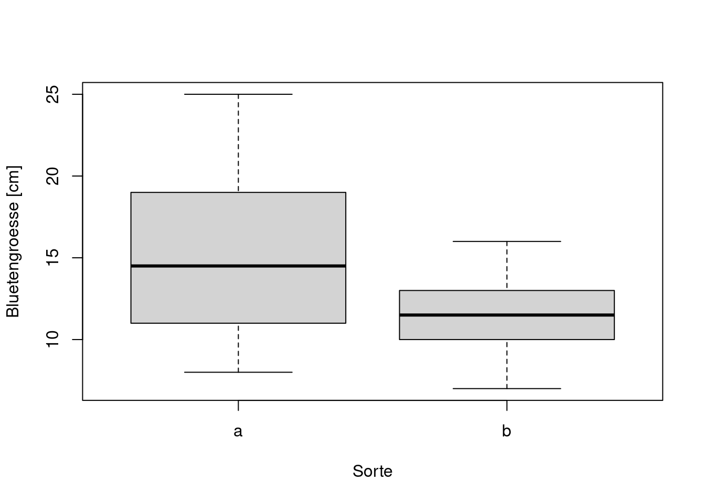
t.test(size~cultivar, blume, var.equal = T)
Two Sample t-test
data: size by cultivar
t = 2.0797, df = 18, p-value = 0.05212
alternative hypothesis: true difference in means between group a and group b is not equal to 0
95 percent confidence interval:
-0.03981237 7.83981237
sample estimates:
mean in group a mean in group b
15.3 11.4 aov(size~cultivar, data = blume)Call:
aov(formula = size ~ cultivar, data = blume)
Terms:
cultivar Residuals
Sum of Squares 76.05 316.50
Deg. of Freedom 1 18
Residual standard error: 4.193249
Estimated effects may be unbalancedsummary(aov(size~cultivar, data = blume)) Df Sum Sq Mean Sq F value Pr(>F)
cultivar 1 76.0 76.05 4.325 0.0521 .
Residuals 18 316.5 17.58
---
Signif. codes: 0 '***' 0.001 '**' 0.01 '*' 0.05 '.' 0.1 ' ' 1summary.lm(aov(size~cultivar, data = blume))
Call:
aov(formula = size ~ cultivar, data = blume)
Residuals:
Min 1Q Median 3Q Max
-7.300 -2.575 -0.350 2.925 9.700
Coefficients:
Estimate Std. Error t value Pr(>|t|)
(Intercept) 15.300 1.326 11.54 9.47e-10 ***
cultivarb -3.900 1.875 -2.08 0.0521 .
---
Signif. codes: 0 '***' 0.001 '**' 0.01 '*' 0.05 '.' 0.1 ' ' 1
Residual standard error: 4.193 on 18 degrees of freedom
Multiple R-squared: 0.1937, Adjusted R-squared: 0.1489
F-statistic: 4.325 on 1 and 18 DF, p-value: 0.05212Echte ANOVA
c <- c(30, 19, 31, 23, 18, 25, 26, 24, 17, 20)
blume2 <- data.frame(cultivar = c(rep("a", 10), rep("b", 10), rep("c", 10)), size = c(a, b, c))
blume2$cultivar <- as.factor(blume2$cultivar)
summary(blume2) cultivar size
a:10 Min. : 7.00
b:10 1st Qu.:11.25
c:10 Median :15.50
Mean :16.67
3rd Qu.:20.00
Max. :31.00 head(blume2) cultivar size
1 a 20
2 a 19
3 a 25
4 a 10
5 a 8
6 a 15par(mfrow=c(1,1))
boxplot(size~cultivar, xlab = "Sorte", ylab = "Blütengrösse [cm]", data = blume2)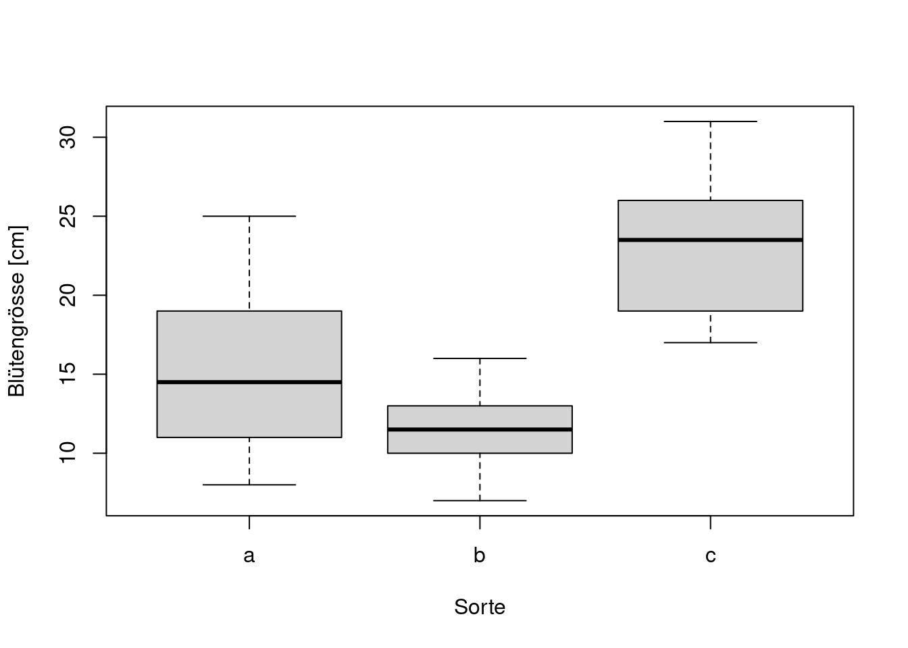
aov(size~cultivar, data = blume2)Call:
aov(formula = size ~ cultivar, data = blume2)
Terms:
cultivar Residuals
Sum of Squares 736.0667 528.6000
Deg. of Freedom 2 27
Residual standard error: 4.424678
Estimated effects may be unbalancedsummary(aov(size~cultivar, data = blume2)) Df Sum Sq Mean Sq F value Pr(>F)
cultivar 2 736.1 368.0 18.8 7.68e-06 ***
Residuals 27 528.6 19.6
---
Signif. codes: 0 '***' 0.001 '**' 0.01 '*' 0.05 '.' 0.1 ' ' 1summary.lm(aov(size~cultivar, data=blume2))
Call:
aov(formula = size ~ cultivar, data = blume2)
Residuals:
Min 1Q Median 3Q Max
-7.300 -3.375 -0.300 2.700 9.700
Coefficients:
Estimate Std. Error t value Pr(>|t|)
(Intercept) 15.300 1.399 10.935 2.02e-11 ***
cultivarb -3.900 1.979 -1.971 0.059065 .
cultivarc 8.000 1.979 4.043 0.000395 ***
---
Signif. codes: 0 '***' 0.001 '**' 0.01 '*' 0.05 '.' 0.1 ' ' 1
Residual standard error: 4.425 on 27 degrees of freedom
Multiple R-squared: 0.582, Adjusted R-squared: 0.5511
F-statistic: 18.8 on 2 and 27 DF, p-value: 7.683e-06aov.1 <- aov(size~cultivar, data = blume2)
summary(aov.1) Df Sum Sq Mean Sq F value Pr(>F)
cultivar 2 736.1 368.0 18.8 7.68e-06 ***
Residuals 27 528.6 19.6
---
Signif. codes: 0 '***' 0.001 '**' 0.01 '*' 0.05 '.' 0.1 ' ' 1summary.lm(aov.1)
Call:
aov(formula = size ~ cultivar, data = blume2)
Residuals:
Min 1Q Median 3Q Max
-7.300 -3.375 -0.300 2.700 9.700
Coefficients:
Estimate Std. Error t value Pr(>|t|)
(Intercept) 15.300 1.399 10.935 2.02e-11 ***
cultivarb -3.900 1.979 -1.971 0.059065 .
cultivarc 8.000 1.979 4.043 0.000395 ***
---
Signif. codes: 0 '***' 0.001 '**' 0.01 '*' 0.05 '.' 0.1 ' ' 1
Residual standard error: 4.425 on 27 degrees of freedom
Multiple R-squared: 0.582, Adjusted R-squared: 0.5511
F-statistic: 18.8 on 2 and 27 DF, p-value: 7.683e-06#Berechnung Mittelwerte usw. zur Charakterisierung der Gruppen
aggregate(size~cultivar, blume2, function(x) c(Mean = mean(x), SD = sd(x), Min = min(x), Max = max(x))) cultivar size.Mean size.SD size.Min size.Max
1 a 15.300000 5.207900 8.000000 25.000000
2 b 11.400000 2.836273 7.000000 16.000000
3 c 23.300000 4.854551 17.000000 31.000000lm.1 <- lm(size~cultivar, data = blume2)
summary(lm.1)
Call:
lm(formula = size ~ cultivar, data = blume2)
Residuals:
Min 1Q Median 3Q Max
-7.300 -3.375 -0.300 2.700 9.700
Coefficients:
Estimate Std. Error t value Pr(>|t|)
(Intercept) 15.300 1.399 10.935 2.02e-11 ***
cultivarb -3.900 1.979 -1.971 0.059065 .
cultivarc 8.000 1.979 4.043 0.000395 ***
---
Signif. codes: 0 '***' 0.001 '**' 0.01 '*' 0.05 '.' 0.1 ' ' 1
Residual standard error: 4.425 on 27 degrees of freedom
Multiple R-squared: 0.582, Adjusted R-squared: 0.5511
F-statistic: 18.8 on 2 and 27 DF, p-value: 7.683e-06Tukeys Posthoc-Test
if(!require(agricolae)){install.packages("agricolae")}Loading required package: agricolaelibrary(agricolae)
HSD.test(aov.1, "cultivar", group = FALSE, console = T)
Study: aov.1 ~ "cultivar"
HSD Test for size
Mean Square Error: 19.57778
cultivar, means
size std r Min Max
a 15.3 5.207900 10 8 25
b 11.4 2.836273 10 7 16
c 23.3 4.854551 10 17 31
Alpha: 0.05 ; DF Error: 27
Critical Value of Studentized Range: 3.506426
Comparison between treatments means
difference pvalue signif. LCL UCL
a - b 3.9 0.1388 -1.006213 8.806213
a - c -8.0 0.0011 ** -12.906213 -3.093787
b - c -11.9 0.0000 *** -16.806213 -6.993787Beispiel Posthoc-Labels in Plot
aov.2 <- aov(Sepal.Width ~ Species, data = iris)
HSD.test(aov.2, "Species", console = T)
Study: aov.2 ~ "Species"
HSD Test for Sepal.Width
Mean Square Error: 0.1153878
Species, means
Sepal.Width std r Min Max
setosa 3.428 0.3790644 50 2.3 4.4
versicolor 2.770 0.3137983 50 2.0 3.4
virginica 2.974 0.3224966 50 2.2 3.8
Alpha: 0.05 ; DF Error: 147
Critical Value of Studentized Range: 3.348424
Minimun Significant Difference: 0.1608553
Treatments with the same letter are not significantly different.
Sepal.Width groups
setosa 3.428 a
virginica 2.974 b
versicolor 2.770 cboxplot(Sepal.Width ~ Species, data = iris)
boxplot(Sepal.Width ~ Species, ylim = c(2, 5), data = iris)
text(1, 4.8, "a")
text(2, 4.8, "c")
text(3, 4.8, "b")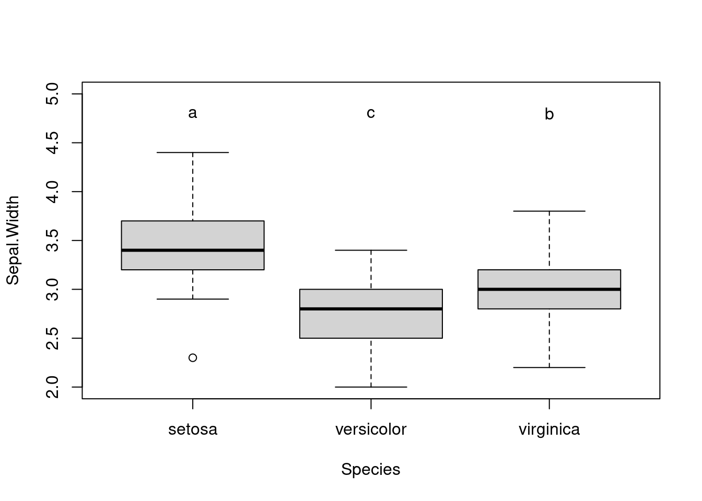
library(tidyverse)── Attaching packages ─────────────────────────────────────── tidyverse 1.3.2 ──
✔ ggplot2 3.3.6 ✔ purrr 0.3.4
✔ tibble 3.1.8 ✔ dplyr 1.0.9
✔ tidyr 1.2.0 ✔ stringr 1.4.1
✔ readr 2.1.2 ✔ forcats 0.5.2
── Conflicts ────────────────────────────────────────── tidyverse_conflicts() ──
✖ dplyr::filter() masks stats::filter()
✖ dplyr::lag() masks stats::lag()ggplot(iris, aes(Species, Sepal.Width)) + geom_boxplot(size = 1) +
annotate("text", y = 5, x = 1:3, label = c("a", "c", "b"))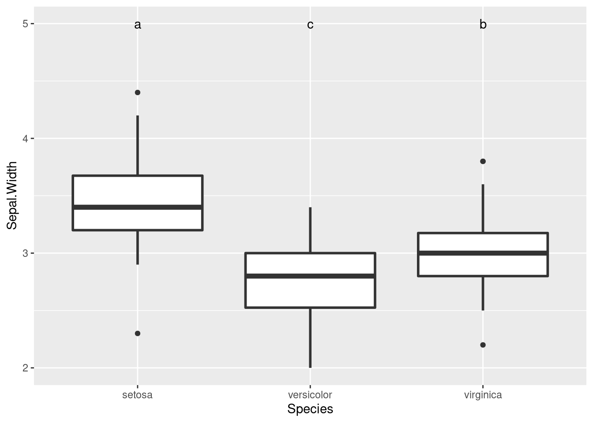
Klassische Tests der Modellannahmen (NICHT EMPFOHLEN!!!)
shapiro.test(blume2$size[blume2$cultivar == "a"])
Shapiro-Wilk normality test
data: blume2$size[blume2$cultivar == "a"]
W = 0.97304, p-value = 0.9175var.test(blume2$size[blume2$cultivar == "a"], blume2$size[blume2$cultivar == "b"])
F test to compare two variances
data: blume2$size[blume2$cultivar == "a"] and blume2$size[blume2$cultivar == "b"]
F = 3.3715, num df = 9, denom df = 9, p-value = 0.08467
alternative hypothesis: true ratio of variances is not equal to 1
95 percent confidence interval:
0.8374446 13.5738284
sample estimates:
ratio of variances
3.371547 if(!require(car)){install.packages("car")}Loading required package: carLoading required package: carData
Attaching package: 'car'The following object is masked from 'package:dplyr':
recodeThe following object is masked from 'package:purrr':
somelibrary(car)
leveneTest(blume2$size[blume2$cultivar == "a"], blume2$size[blume2$cultivar == "b"], center=mean)Warning in leveneTest.default(blume2$size[blume2$cultivar == "a"],
blume2$size[blume2$cultivar == : blume2$size[blume2$cultivar == "b"] coerced to
factor.Warning in anova.lm(lm(resp ~ group)): ANOVA F-tests on an essentially perfect
fit are unreliableLevene's Test for Homogeneity of Variance (center = mean)
Df F value Pr(>F)
group 7 3.0148e+30 < 2.2e-16 ***
2
---
Signif. codes: 0 '***' 0.001 '**' 0.01 '*' 0.05 '.' 0.1 ' ' 1wilcox.test(blume2$size[blume2$cultivar == "a"], blume2$size[blume2$cultivar == "b"])Warning in wilcox.test.default(blume2$size[blume2$cultivar == "a"],
blume2$size[blume2$cultivar == : cannot compute exact p-value with ties
Wilcoxon rank sum test with continuity correction
data: blume2$size[blume2$cultivar == "a"] and blume2$size[blume2$cultivar == "b"]
W = 73, p-value = 0.08789
alternative hypothesis: true location shift is not equal to 0Nicht-parametrische Alternativen, wenn Modellannahmen der ANVOA massiv verletzt sind
Zum Vergleich normale ANOVA noch mal
summary(aov(size~cultivar, data = blume2)) Df Sum Sq Mean Sq F value Pr(>F)
cultivar 2 736.1 368.0 18.8 7.68e-06 ***
Residuals 27 528.6 19.6
---
Signif. codes: 0 '***' 0.001 '**' 0.01 '*' 0.05 '.' 0.1 ' ' 1Bei starken Abweichungen von der Normalverteilung, aber ähnlichen Varianzen
Kruskal-Wallis-Test
kruskal.test(size~cultivar, data = blume2)
Kruskal-Wallis rank sum test
data: size by cultivar
Kruskal-Wallis chi-squared = 16.686, df = 2, p-value = 0.0002381if(!require(FSA)){install.packages("FSA")} Loading required package: FSARegistered S3 methods overwritten by 'FSA':
method from
confint.boot car
hist.boot car ## FSA v0.9.3. See citation('FSA') if used in publication.
## Run fishR() for related website and fishR('IFAR') for related book.
Attaching package: 'FSA'The following object is masked from 'package:car':
bootCaselibrary(FSA)
#korrigierte p-Werte nach Bejamini-Hochberg
dunnTest(size~cultivar, method = "bh", data = blume2) Dunn (1964) Kruskal-Wallis multiple comparison p-values adjusted with the Benjamini-Hochberg method. Comparison Z P.unadj P.adj
1 a - b 1.526210 1.269575e-01 0.1269575490
2 a - c -2.518247 1.179407e-02 0.0176911039
3 b - c -4.044457 5.244459e-05 0.0001573338Bei erheblicher Heteroskedastizität, aber relative normal/symmetrisch verteilten Residuen
Welch-Test
oneway.test(size~cultivar, var.equal = F, data = blume2)
One-way analysis of means (not assuming equal variances)
data: size and cultivar
F = 21.642, num df = 2.000, denom df = 16.564, p-value = 2.397e-052-faktorielle ANOVA
d <- c(10, 12, 11, 13, 10, 25, 12, 30, 26, 13)
e <- c(15, 13, 18, 11, 14, 25, 39, 38, 28, 24)
f <- c(10, 12, 11, 13, 10, 9, 2, 4, 7, 13)
blume3 <- data.frame(cultivar=c(rep("a", 20), rep("b", 20), rep("c", 20)),
house = c(rep(c(rep("yes", 10), rep("no", 10)), 3)),
size = c(a, b, c, d, e, f))blume3boxplot(size~cultivar + house, data = blume3)
summary(aov(size~cultivar + house, data = blume3)) Df Sum Sq Mean Sq F value Pr(>F)
cultivar 2 417.1 208.6 5.005 0.01 *
house 1 992.3 992.3 23.815 9.19e-06 ***
Residuals 56 2333.2 41.7
---
Signif. codes: 0 '***' 0.001 '**' 0.01 '*' 0.05 '.' 0.1 ' ' 1summary(aov(size~cultivar + house + cultivar:house, data = blume3)) Df Sum Sq Mean Sq F value Pr(>F)
cultivar 2 417.1 208.6 5.364 0.0075 **
house 1 992.3 992.3 25.520 5.33e-06 ***
cultivar:house 2 233.6 116.8 3.004 0.0579 .
Residuals 54 2099.6 38.9
---
Signif. codes: 0 '***' 0.001 '**' 0.01 '*' 0.05 '.' 0.1 ' ' 1#Kurzschreibweise: "*" bedeutet, dass Interaktion zwischen cultivar und house eingeschlossen wird
summary(aov(size~cultivar * house, data = blume3)) Df Sum Sq Mean Sq F value Pr(>F)
cultivar 2 417.1 208.6 5.364 0.0075 **
house 1 992.3 992.3 25.520 5.33e-06 ***
cultivar:house 2 233.6 116.8 3.004 0.0579 .
Residuals 54 2099.6 38.9
---
Signif. codes: 0 '***' 0.001 '**' 0.01 '*' 0.05 '.' 0.1 ' ' 1summary.lm(aov(size~cultivar+house, data = blume3))
Call:
aov(formula = size ~ cultivar + house, data = blume3)
Residuals:
Min 1Q Median 3Q Max
-9.733 -4.696 -1.050 2.717 19.133
Coefficients:
Estimate Std. Error t value Pr(>|t|)
(Intercept) 9.283 1.667 5.570 7.52e-07 ***
cultivarb 6.400 2.041 3.135 0.00273 **
cultivarc 2.450 2.041 1.200 0.23509
houseyes 8.133 1.667 4.880 9.19e-06 ***
---
Signif. codes: 0 '***' 0.001 '**' 0.01 '*' 0.05 '.' 0.1 ' ' 1
Residual standard error: 6.455 on 56 degrees of freedom
Multiple R-squared: 0.3766, Adjusted R-squared: 0.3432
F-statistic: 11.28 on 3 and 56 DF, p-value: 6.848e-06interaction.plot(blume3$cultivar, blume3$house, blume3$size)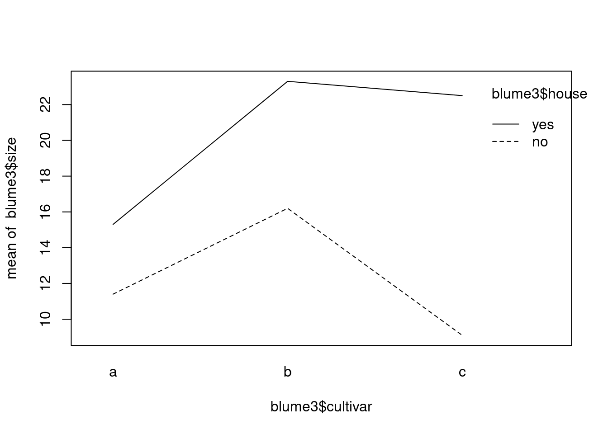
interaction.plot(blume3$house, blume3$cultivar, blume3$size)
anova(lm(blume3$size~blume3$cultivar*blume3$house), lm(blume3$size~blume3$cultivar+blume3$house))Analysis of Variance Table
Model 1: blume3$size ~ blume3$cultivar * blume3$house
Model 2: blume3$size ~ blume3$cultivar + blume3$house
Res.Df RSS Df Sum of Sq F Pr(>F)
1 54 2099.6
2 56 2333.2 -2 -233.63 3.0044 0.05792 .
---
Signif. codes: 0 '***' 0.001 '**' 0.01 '*' 0.05 '.' 0.1 ' ' 1anova(lm(blume3$size~blume3$house), lm(blume3$size~blume3$cultivar * blume3$house))Analysis of Variance Table
Model 1: blume3$size ~ blume3$house
Model 2: blume3$size ~ blume3$cultivar * blume3$house
Res.Df RSS Df Sum of Sq F Pr(>F)
1 58 2750.3
2 54 2099.6 4 650.73 4.1841 0.005045 **
---
Signif. codes: 0 '***' 0.001 '**' 0.01 '*' 0.05 '.' 0.1 ' ' 1Korrelationen
library(car)
blume <- data.frame(a, b)
scatterplot(a~b, blume)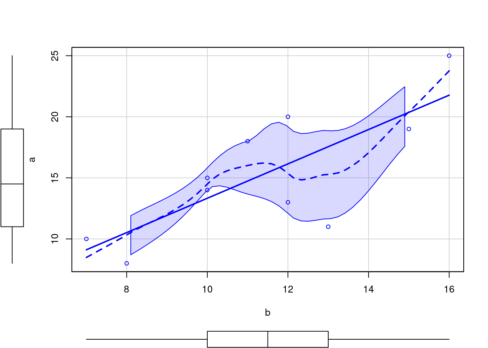
cor.test(a, b, method = "pearson", data = blume)
Pearson's product-moment correlation
data: a and b
t = 3.3678, df = 8, p-value = 0.009818
alternative hypothesis: true correlation is not equal to 0
95 percent confidence interval:
0.2628864 0.9414665
sample estimates:
cor
0.7657634 cor.test(a, b, method = "spearman", data = blume)Warning in cor.test.default(a, b, method = "spearman", data = blume): Cannot
compute exact p-value with ties
Spearman's rank correlation rho
data: a and b
S = 53.321, p-value = 0.03159
alternative hypothesis: true rho is not equal to 0
sample estimates:
rho
0.6768419 cor.test(a, b, method = "kendall", data = blume) Warning in cor.test.default(a, b, method = "kendall", data = blume): Cannot
compute exact p-value with ties
Kendall's rank correlation tau
data: a and b
z = 2.0738, p-value = 0.03809
alternative hypothesis: true tau is not equal to 0
sample estimates:
tau
0.5228623 #Jetzt als Regression
lm.2 <- lm(b~a)
anova(lm.2)Analysis of Variance Table
Response: b
Df Sum Sq Mean Sq F value Pr(>F)
a 1 42.455 42.455 11.342 0.009818 **
Residuals 8 29.945 3.743
---
Signif. codes: 0 '***' 0.001 '**' 0.01 '*' 0.05 '.' 0.1 ' ' 1summary(lm.2)
Call:
lm(formula = b ~ a)
Residuals:
Min 1Q Median 3Q Max
-2.1897 -1.3388 -0.6067 1.3081 3.3933
Coefficients:
Estimate Std. Error t value Pr(>|t|)
(Intercept) 5.0193 1.9910 2.521 0.03575 *
a 0.4170 0.1238 3.368 0.00982 **
---
Signif. codes: 0 '***' 0.001 '**' 0.01 '*' 0.05 '.' 0.1 ' ' 1
Residual standard error: 1.935 on 8 degrees of freedom
Multiple R-squared: 0.5864, Adjusted R-squared: 0.5347
F-statistic: 11.34 on 1 and 8 DF, p-value: 0.009818#Model II-Regression
if(!require(lmodel2)){install.packages("lmodel2")} Loading required package: lmodel2library(lmodel2)
lmodel2(b~a)RMA was not requested: it will not be computed.No permutation test will be performed
Model II regression
Call: lmodel2(formula = b ~ a)
n = 10 r = 0.7657634 r-square = 0.5863936
Parametric P-values: 2-tailed = 0.009817588 1-tailed = 0.004908794
Angle between the two OLS regression lines = 12.78218 degrees
Regression results
Method Intercept Slope Angle (degrees) P-perm (1-tailed)
1 OLS 5.019254 0.4170422 22.63820 NA
2 MA 4.288499 0.4648040 24.92919 NA
3 SMA 3.067471 0.5446097 28.57314 NA
Confidence intervals
Method 2.5%-Intercept 97.5%-Intercept 2.5%-Slope 97.5%-Slope
1 OLS 0.4280737 9.610435 0.1314843 0.7026001
2 MA -1.4843783 8.769024 0.1719592 0.8421162
3 SMA -2.3775157 6.360555 0.3293755 0.9004912
Eigenvalues: 32.37967 2.786995
H statistic used for computing C.I. of MA: 0.0684968 Beispiele Modelldiagnostik
par(mfrow=c(2, 2)) #4 Plots in einem Fenster
plot(lm(b~a))
if(!require(ggfortify)){install.packages("ggfortify")}Loading required package: ggfortifylibrary(ggfortify)
autoplot(lm(b~a))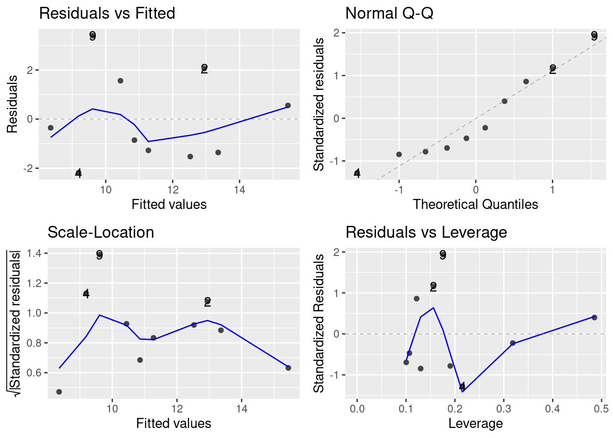
# Modellstatistik nicht OK
g <- c(20, 19, 25, 10, 8, 15, 13, 18, 11, 14, 25, 39, 38, 28, 24)
h <- c(12, 15, 10, 7, 8, 10, 12, 11, 13, 10, 25, 12, 30, 26, 13)
par(mfrow = c(1, 1))
plot(h~g,xlim = c(0, 40), ylim = c(0, 30))
abline(lm(h~g))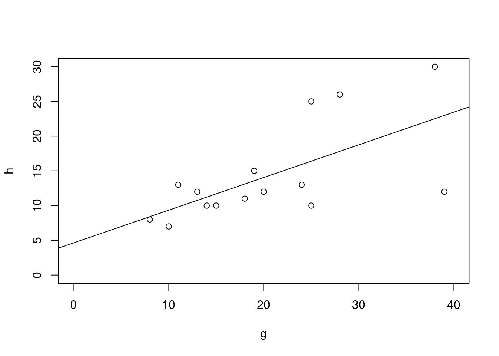
par(mfrow = c(2, 2))
plot(lm(h~g))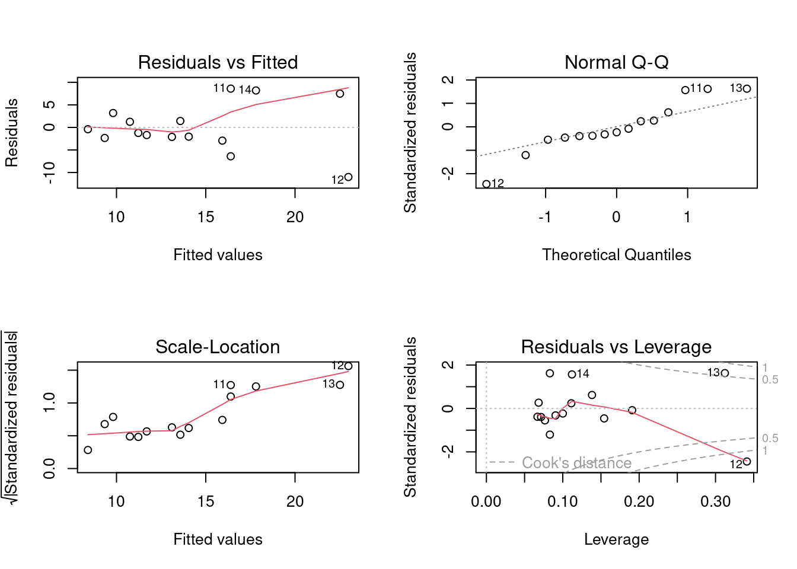
# Modelldiagnostik mit ggplot
df <- data.frame(g, h)
ggplot(df, aes(x = g, y = h)) +
# scale_x_continuous(limits = c(0,25)) +
# scale_y_continuous(limits = c(0,25)) +
geom_point() +
geom_smooth( method = "lm", color = "black", size = .5, se = F) +
theme_classic()`geom_smooth()` using formula 'y ~ x'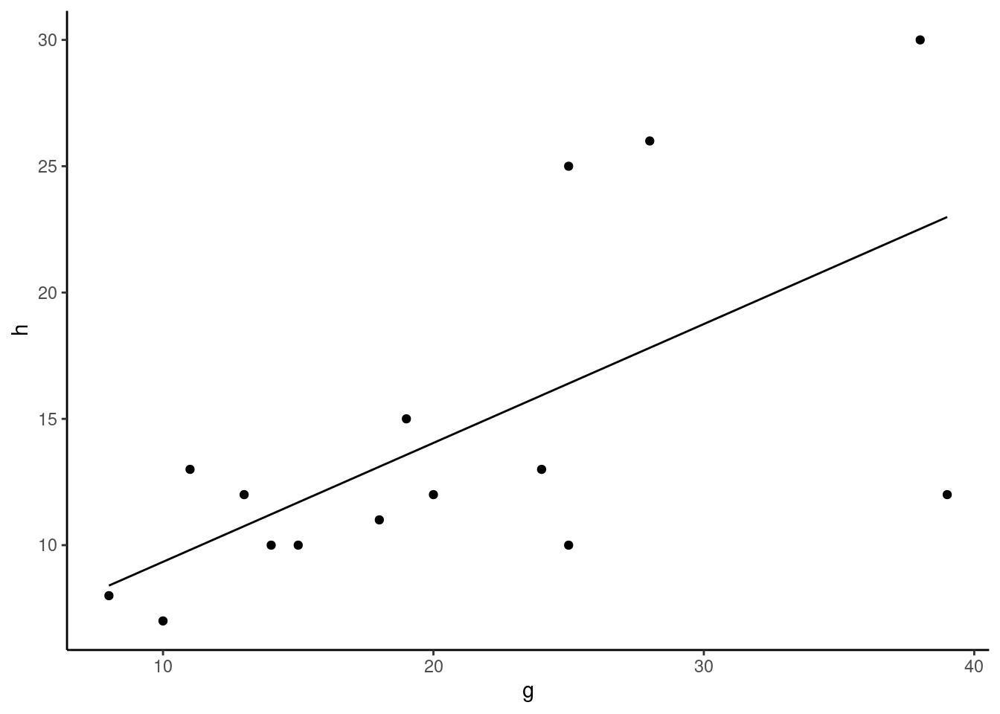
par(mfrow=c(2, 2))
autoplot(lm(h~g))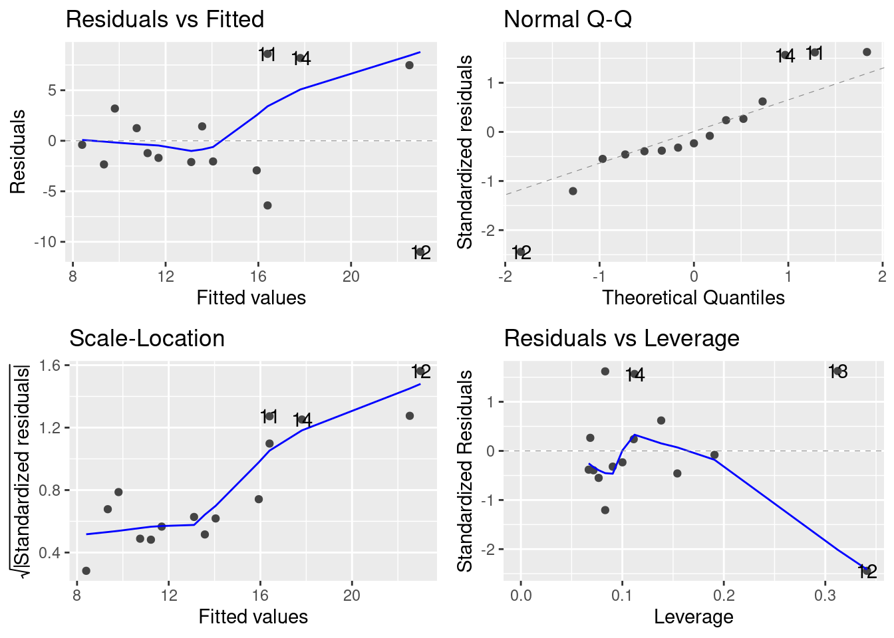